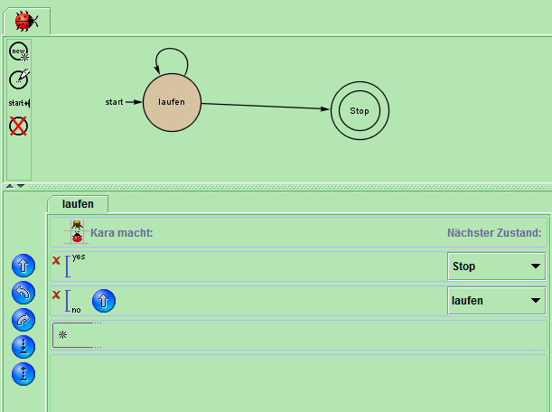
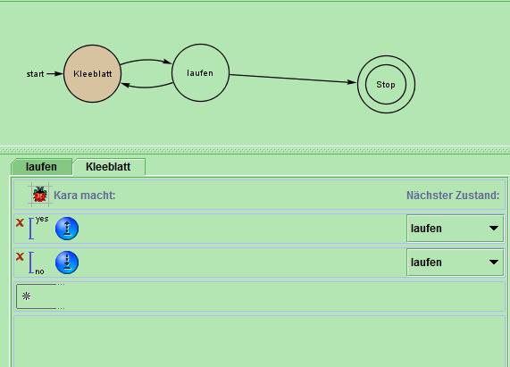
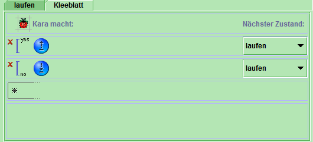

Aufgabe 1: Erstelle die Welt 1(AB) und lasse Kara den Weg zum Baum entlanggehen.

Keine Probleme. Sie sammelt alle Blätter auf. Finish
Aufgabe 2: Lasse Kara alle Kleblätter der Ersten Zeile aufheben:
 Finish
Aufgabe 3: Kara soll auf ihrem Weg überall wo ein Kleeblatt ist es aufheben und überall wo kein Kleeblatt ist eines hinlegen:
Mit einer kleinen Änderung in der NO Abfrage in der Schleife ist diese Aufgabe schnell gelößt. Man muss nur bei NO "ablegen" einfügen.

Seite 2 Aufgabe 1: Lasse Kara alle Kleblätter einsammeln
Der Code Funktioniert. Siehe Graphik:
Unser Programm war auf anhieb Richtig:
Kara stoppt bei dem Baum.
Aufgabe 2:
Dieses Programm wäre kein endlicher Automat. Wir haben alle Kleeblätter auf einer Reihe einsammeln lassen.
Aufgabe 3:
Welche Sensoren sind notwendig?
"Kleeblatt unten"
"Baum vorne"
Keine Probleme
Da wir unsere Website in HTML geschrieben haben haben wir unsere Aufgaben etwas langsamer bearbeitet. Dafür haben wir den Code für unsere Website selber geschrieben.
Created with HTML